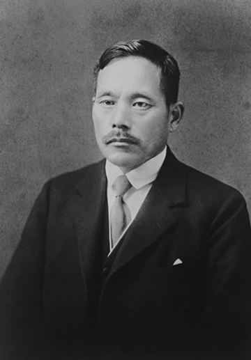

아니라, 배움에서 비롯되는 환희와
열정을 북돋아야 한다.”
명언 보기
마키구치 쓰네사부로
마키구치 쓰네사부로(1871-1944) 선생님은 진보적 지리학자, 교육이론가, 종교개혁가로, 근대 일본 격동의 시대에 살았던 인물이다. 일본 군국주의와 국가주의를 반대했던 마키구치 선생님은 이로
인해 제2차 세계대전 중 옥사했다. 마키구치 선생님은 두 권의 저서 ‘인생지리학’과 ‘창가교육학체계’ 그리고 1930년에 창립한 창가학회 초대 회장으로 잘 알려져 있다. 창가학회는 현재 일본을
비롯한 전 세계에 1천 2백만여 명의 회원이 있는 가장 큰 규모의 재가불교단체이다.
마키구치 선생님의 저서와 교사이자 교장으로서의 실천에서 볼 수 있는 일관된 모습은 바로 ‘개인의 행복’을 중시하는 신념이다. 종교개혁가로서의 활동에서도 이와 같은 신념을 엿볼 수 있다. 마키구치
선생님은 권력당국이 불법(佛法)의 근본 가르침을 왜곡하려 할 때, 이를 단호히 거부하며 종교는 언제나 인간을 위해 존재한다고 주장했다.
인생의 목적은 무엇인가? 한마디로 표현한다면 '행복'일 것이다.
따라서 교육의 목적 또한 인생의 목적과 일치해야 한다.
따라서 교육의 목적 또한 인생의 목적과 일치해야 한다.
What is the purpose of life? In a word, it would be 'happiness.' Therefore, the purpose of education should also
align with the purpose of life.
Tsunesaburo Makiguchi
Archive 아카이브
마키구치 선생님의 생전에 남기신
다양한 기록을 살펴보세요.